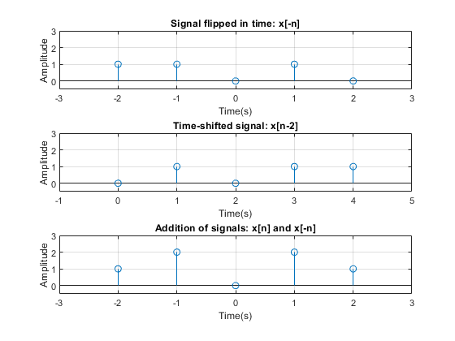

Pratik Ravikumar Sanghavi (2017AAPS0394G)
Contents
- Problem Statement 1:Plotting of functions as per question
- Program Initialization
- Signal Generation Segment: x[n]
- Generation of signal flipped in time: x[-n]
- Generation of time-shifted signal: x[n-2]
- Addition of signals: x[n] and x[-n]
- Plotting results
- Problem Statement 2:Cross Correlation between two finite length sequences
- Program Initialization
- Taking input from user
Problem Statement 1:Plotting of functions as per question
Program Initialization
clc; clear all; close all;
Signal Generation Segment: x[n]
n=-2:2; stepfn=stepsignal(1,min(n),max(n)); % function [xofn,index]=stepsignal(sindex,lindex,rindex) % index=[lindex:rindex]; % xofn=[(index-sindex)>=0]; % end impulsefn=impulsesignal(-1,min(n),max(n)); % function [xofn,index]=impulsesignal(sindex,lindex,rindex) % index=[lindex:rindex]; % xofn=[(index-sindex)==0]; % end x=stepfn+impulsefn;
Generation of signal flipped in time: x[-n]
[xflip,nflip]=xreflected(x,n); % function [xnew, nnew] = xreflected(xold, nold) % xnew = fliplr(xold); % nnew = -fliplr(nold); % end
Generation of time-shifted signal: x[n-2]
[xshift, nshift]=xshifted (x,n,2); % function[xnew, nnew] = xshifted (xold, nold, n0) % nnew = nold + n0; % xnew = xold; % end
Addition of signals: x[n] and x[-n]
[xadd, nadd]=x1plusx2 (x,xflip,n,nflip); % function[x, n] = x1plusx2 (x1orig, x2orig, n1orig, n2orig) % n = min(min(n1orig), min(n2orig)): max(max(n1orig), max(n2orig)); % x1i = zeros(1, length(n)); % x2i= x1i; % x1i (find( (n >= min(n1orig))&(n <= max(n1orig))== 1))= x1orig; % x2i (find( (n >= min(n2orig))&(n<= max(n2orig)) == 1))= x2orig; % x = x1i+ x2i; % end
Plotting results
figure(1) subplot(3,1,1) stem(nflip,xflip); xlabel('Time(s)'); ylabel('Amplitude'); title('Signal flipped in time: x[-n]'); axis([-3 3 -0.5 3]); grid on subplot(3,1,2) stem(nshift,xshift); xlabel('Time(s)'); ylabel('Amplitude'); title('Time-shifted signal: x[n-2]'); axis([-1 5 -0.5 3]); grid on subplot(3,1,3) stem(nadd,xadd); xlabel('Time(s)'); ylabel('Amplitude'); title('Addition of signals: x[n] and x[-n]'); axis([-3 3 -0.5 3]); grid on
Problem Statement 2:Cross Correlation between two finite length sequences
Program Initialization
clc;
clear all;
Taking input from user
e=0; while e==0 prompt="Enter first sequence:\n"; seq1=[1;2;3;4]; prompt="Enter second sequence:\n"; seq2=[1;2;3;4]; if length(seq1)~=length(seq2) disp("Please enter sequences of equal length!"); else e=1; end end seqcorr=correlation_fun(seq1,seq2); % function xcorr=correlation_fun(x1,x2) % len1=length(x1); % len2=length(x2); % xcorr=zeros(len1+len2-1,1); % for i=-len2+1:1:len1 % x2s=xshifted (x2,len2,i); % if i>0 % x2s=[zeros(i-1,1);x2s]; % x2s=x2s(1:len2,1); % x1mod=x1; % elseif i<=0 % x1mod=[zeros(abs(i),1);x1]; % x1mod=x1mod(1:len1,1); % x2s=x2; % end % xcorr(i+len2)=sum(x1mod.*x2s); % end % xcorr=[xcorr(1:ceil(length(xcorr)/2)-1);xcorr(ceil(length(xcorr)/2)+1:end)]; % end disp(seqcorr); disp(xcorr(seq1,seq2));
4
11
20
30
20
11
4
4.0000
11.0000
20.0000
30.0000
20.0000
11.0000
4.0000